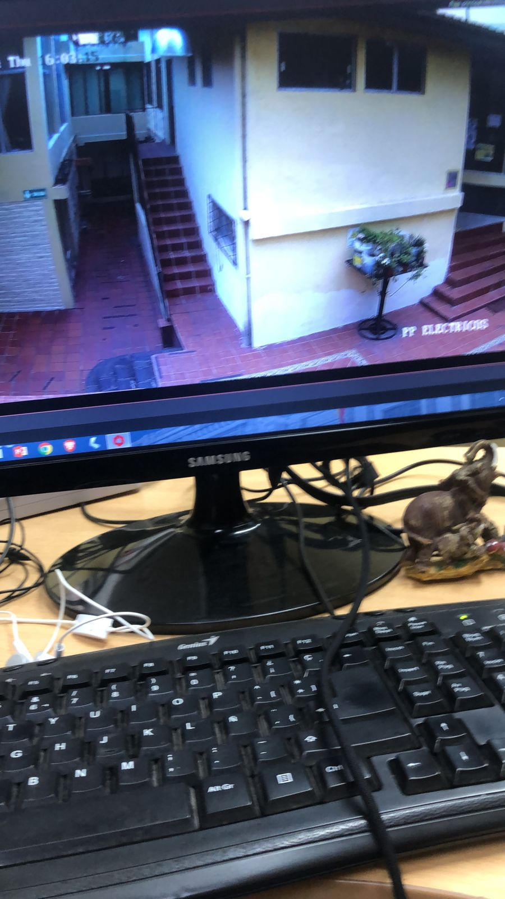
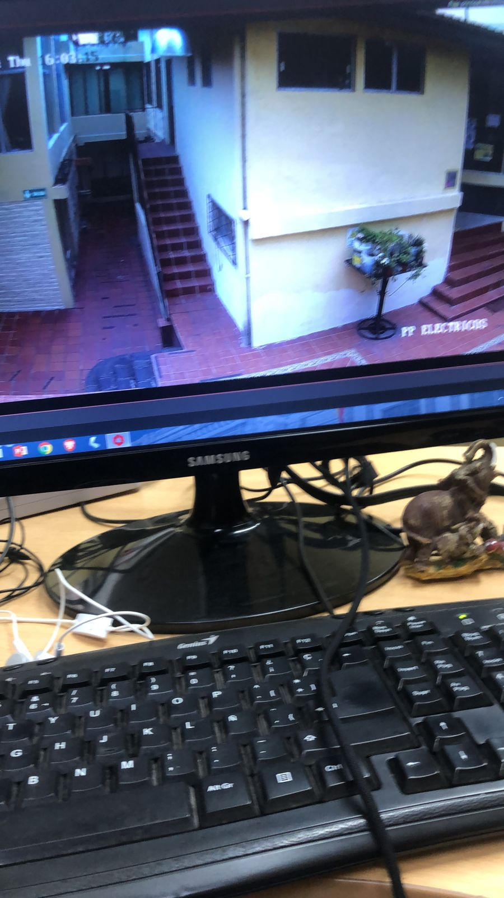

Introducción
En este espacio, describo las actividades que realicé en el tiempo que tuve mis pasantías, que van desde el mantenimiento de hardware hasta la gestión de la seguridad informática. Una de las primeras tareas que llevé a cabo fue la limpieza y mantenimiento de computadores, una actividad fundamental para asegurar que el funcionamiento de los equipos esté bien y prolongar su vida útil. Además, participé en el reseteo de computadoras, un proceso crucial para mantener la seguridad y el rendimiento de los sistemas.
Datos Básicos de la Pasantía
- Duración: 1 meses
- Fecha inicio: Junio
- Fecha culminación: 24 de Julio
- Horario: 8:00 am hasta 17:00pm
- Ubicación: Municipio del Cantón Mejía
Habilidades Adquiridas
- Responsabilidad y organización en el lugar de trabajo
- Habilidades técnicas en el mantenimiento de hardware
- Resolución de problemas técnicos
- Gestión de contraseñas y seguridad informática
- Trabajo en equipo y comunicación efectiva
Principales Habilidades Desarrolladas
- Habilidades Técnicas: 70%
- Gestión del Tiempo: 80%
- Trabajo en Equipo: 90%
- Comunicación Efectiva: 85%
Experiencias
Realicé mis pasantías en el municipio del cantón Mejía. Durante este tiempo, participé en diversas actividades como:
- Limpieza y mantenimiento de computadores
- Reseteo de computadoras
- Cambio de discos duros
- Limpieza de memorias
- Cambio de contraseñas de internet
- Mantenimiento de ventiladores de las PCs

 
